Справочник по ClickHouse · модуль 1 · первые данные
Глава 1.2
Типы данных
Нужно сохранить позицию заказа: количество, сумму, название, дату доставки, время заказа и код товара. Выберем для каждого значения тип так, чтобы не потерять копейки, ведущие нули и нужную точность времени.
- Категория
- Первые данные
- Уровень
- Начальный
- Уже знаете
- База, таблица, строка, столбец; SELECT и DESCRIBE
- Понадобится
- Стенд 26.8.36.3; Play UI или clickhouse-client
Что предстоит решить
Магазин принимает до 50 000 единиц товара в одной позиции, сумма позиции — не больше 5 000 000 рублей с копейками. Названия произвольные, доставка назначается на день, время заказа известно до секунды. В коде товара 00127 начальные нули значимы.
§1От значения к типу
Зачем этот шагОдинаково записанные значения могут требовать разных правил хранения: количество 127 и код товара 00127 используют по-разному.
Тип данных задаёт множество допустимых значений, их внутреннее представление и операции над ними. Для количества требуются арифметика и верхняя граница; для кода товара — сохранение записи. Поэтому сначала выясняют смысл значения и требования ко всему столбцу.
Проверим ход выбора на количестве. Недостаточно увидеть в первой строке число 3: нужно учесть весь разрешённый диапазон.
0…50 000 штукТолько целые; отрицательных количеств нет.Целое без минусаВыбранное представление: максимум 65 535.50 000 помещаетсяДополнительно проверяем, как обнаруживать выход за границу.Получившийся тип покрывает заявленный максимум. Он не запрещает количество 60 000: это уже нарушение правила магазина, но ещё помещается в выбранное представление. Тип не заменяет все проверки данных.
По-простому: тара для отмеренного количества
Для доставки жидкости сначала узнают объём и допустимы ли доли литра, а затем выбирают мерную тару. Надпись «3 литра» на первой заявке не означает, что все будущие заявки поместятся в трёхлитровую ёмкость.
Что есть что: объём заявки — значение; вместимость и деления — диапазон и точность типа. Граница аналогии: жидкость при избытке выливается, а преобразование в ClickHouse может вернуть другое число или ошибку. Конкретное поведение проверяют отдельным запросом.
Для такой проверки сначала понадобится функция, показывающая тип результата.
§2Как проверить выбранный тип
Зачем этот шагОтделим тип числа в тексте запроса от типа, который нужен в будущей таблице.
Функция toTypeName(выражение) возвращает имя типа. Функция получает значения в скобках и вычисляет результат. toUInt16(значение) преобразует значение в беззнаковое целое с 16 битами. SELECT без FROM вычисляет выражения без чтения таблицы; AS задаёт имя столбца ответа.
SELECT toTypeName(42) AS literal_type,
toTypeName(toUInt16(42)) AS chosen_type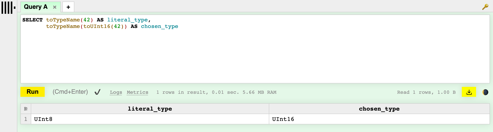
Ответ: UInt8 и UInt16. Литерал — значение, записанное прямо в запросе, например 42 или 'Ноутбук'. Для положительного целого литерала сервер подбирает небольшой подходящий тип; это не рекомендация для всего столбца.
Все следующие запросы только вычисляют значения: они не создают таблицы и не меняют данные. В Play UI из главы 0.2 замените текст запроса и нажмите Run. Кадры сняты на ClickHouse 26.8.36.3, часовой пояс сервера — UTC. Запускайте каждый пример отдельно.
в первом столбце ответа — UInt8, во втором — UInt16. Одно значение 42 представимо в обоих типах.
Теперь проверим диапазоны целых и результат выхода за их границы.
§3Количество: Int и UInt
Зачем этот шагВ оптовом заказе количество достигает 50 000 штук. Проверим, какие целые типы покрывают этот максимум.
Int — целое со знаком: допускает минус. UInt — целое без знака: от нуля вверх. Число в имени — количество битов, двоичных разрядов. В одном байте 8 бит. У типа с n битами есть 2n комбинаций: UInt использует их для неотрицательных чисел, Int — для отрицательных и неотрицательных.
| Тип | Байт на значение | Допустимый диапазон | Решение для нашей задачи |
|---|---|---|---|
UInt8 | 1 | 0…255 | Не подходит для 50 000 штук |
Int8 | 1 | −128…127 | Знак сокращает положительную часть диапазона |
UInt16 | 2 | 0…65 535 | Подходит для количества |
Int16 | 2 | −32 768…32 767 | 50 000 уже не помещается |
UInt32 | 4 | 0…4 294 967 295 | Нужен, если количество превысит 65 535 |
Int32 | 4 | −2 147 483 648…2 147 483 647 | Например, изменение остатка до ±50 000 |
Это размеры представления значений, не размер сжатой таблицы на диске. Более широкие целые есть, но для заявленных количеств они не нужны.
Теперь проверим не только допустимое значение, но и ошибочный выбор узкого типа.
SELECT toUInt8(255) AS fits,
toUInt8(256) AS wrapped,
toUInt8(-1) AS negative,
toInt8(128) AS signed,
toUInt16(50000) AS qty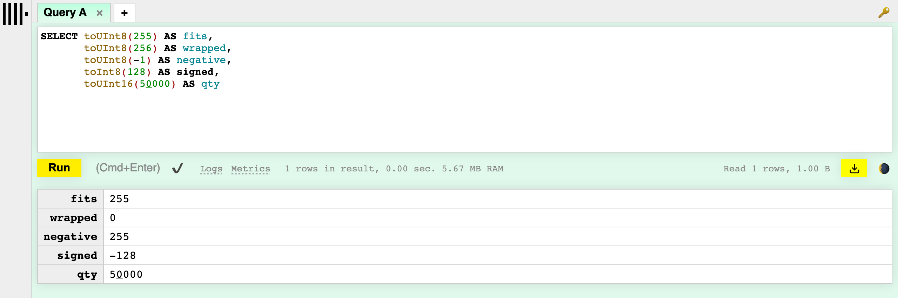
Здесь переполнение означает, что число вышло за диапазон целевого типа. При этих преобразованиях сохраняются младшие 8 бит: у 256 двоичная запись 1 0000 0000, после удаления старшего разряда остаются восемь нулей. Для Int8 комбинация, соответствующая 128 без знака, читается как −128.
Если нужно обнаружить выход за диапазон, используйте accurateCast(значение, 'Тип') — преобразование с проверкой представимости. Имя типа здесь передаётся строкой.
SELECT accurateCast(256, 'UInt8')
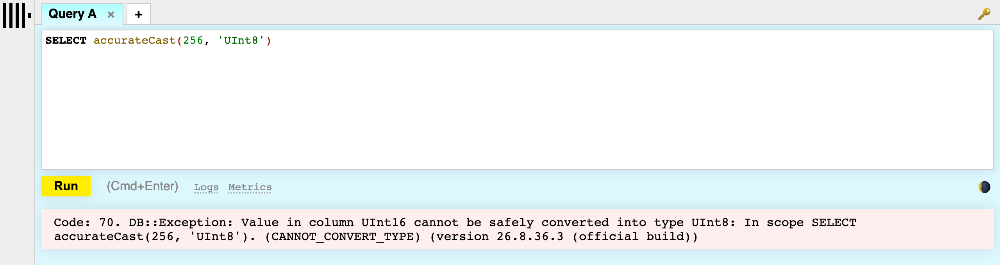
На проверенном стенде ответ — Code: 70, CANNOT_CONVERT_TYPE: 256 нельзя безопасно представить в UInt8. Такой результат нельзя принять за успешную загрузку значения.
Вывод о молчаливом изменении относится к показанным toUInt8 и toInt8. Он не описывает любой INSERT: поведение зависит от способа вставки, формата и настроек. Загрузка данных — глава 1.5.
ответ первого запроса — 255, 0, 255, -128, 50000, второго — ошибка. Для количества до 50 000 без минуса выбран UInt16; для изменения остатка с минусом понадобился бы Int32.
Количество определено. Для суммы с копейками нужно проверить точность дробного представления.
§4Дробные значения: где Float теряет точность
Зачем этот шагУ суммы есть копейки. Прежде чем выбирать дробный тип, проверим, сохраняет ли он нужные десятичные значения.
На линейке с миллиметровыми делениями длину между рисками записывают с округлением. У дробного типа тоже есть ограничение представимости; у Float доступный шаг зависит от величины числа, поэтому равномерная шкала линейки объясняет лишь сам факт округления.
Float32 и Float64 — числа с плавающей точкой: хранят двоичные значащие цифры и порядок, задающий положение точки. Они представляют широкий диапазон величин, но с ограниченной точностью. Примерно это 7 значащих десятичных цифр у Float32 и 15–16 у Float64. Это точность всего числа, включая целую часть. Конечные значения имеют порядок до 1038 и 10308 соответственно; представлены не все числа между границами.
SELECT 0.1 + 0.2 AS total,
0.1 + 0.2 = 0.3 AS equal,
toFloat32(16777217) AS rounded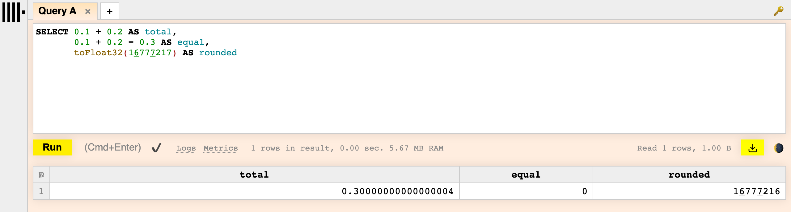
Дробные литералы здесь имеют тип Float64. Десятичная 0,1 в двоичной системе — бесконечная дробь, подобно 1/3 в десятичной. Для хранения её округляют до доступных разрядов. Поэтому сумма равна 0.30000000000000004, а сравнение с 0.3 возвращает 0 — ложь. Это результат сравнения самих значений, которое выполняется до отображения.
Float подходит для измерений, если его погрешность меньше допустимой погрешности данных: например, для температуры с точностью до десятых градуса. При больших величинах доступный шаг между соседними числами увеличивается — это видно по третьему столбцу. Для суммы, которая должна точно хранить копейки, выберем другое представление. Скорость типов этот опыт не сравнивает.
получены хвост у суммы, ложное равенство и 16777216 вместо 16777217. Критерий выбора Float — допустимая погрешность во всём рабочем диапазоне.
Для суммы с точными копейками рассмотрим хранение десятичных разрядов через целое число.
§5Денежная сумма: Decimal
Зачем этот шагСумма позиции должна хранить рубли и копейки без двоичного приближения десятичных дробей.
В книге учёта можно договориться записывать все суммы в копейках: 1499 рублей 70 копеек превращаются в целое 149970. Такая договорённость о единице соответствует масштабу десятичного типа. В отличие от бумажного учёта, его диапазон ограничен выбранным представлением.
Decimal(P, S) — десятичное число с фиксированной точкой. Точность P задаёт общее количество десятичных цифр, масштаб S — количество знаков после запятой. Для Decimal(9, 2) остаётся семь цифр до запятой: допустимы значения от -9999999.99 до 9999999.99 с шагом 0,01. Сумма до 5 000 000 рублей помещается; знак у Decimal есть независимо от того, нужен ли он магазину.
Проследим, как представляется 1499,70 рубля. На схеме проверим соответствие между целым числом и масштабом.
'1499.70'Десятичные цифры без промежуточного Float.149970; S = 2Целое число и масштаб типа.149970 / 1001499 рублей 70 копеек.При сложении сумм одного масштаба складываются целые представления: нет необходимости округлять каждую десятую до двоичной дроби. Но результат по-прежнему должен помещаться в тип.
toDecimal32(значение, масштаб) создаёт Decimal(9, S) с 32-битным целым представлением, то есть 4 байтами на значение. Таким образом, 32 обозначает разрядность внутреннего целого. Вводим исходные суммы строками в одинарных кавычках:
SELECT toDecimal32('0.10', 2) + toDecimal32('0.20', 2) AS total,
toTypeName(toDecimal32('0.10', 2)) AS type,
toDecimal32('19.999', 2) AS reduced_scale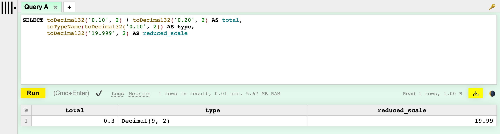
Клиент может вывести 0.3, убрав завершающий ноль: значение остаётся точным, а масштаб типа — 2. Однако 19.999 стало 19.99, не 20.00. Фиксированный масштаб не задаёт бухгалтерское правило округления. Правило для лишних разрядов нужно согласовать до загрузки.
Почему исходную сумму передаём строкой
toDecimal64(x, 2) создаёт более широкий Decimal(18, 2). Сравните два входа:
SELECT toDecimal64(1.15, 2) AS from_float,
toDecimal64('1.15', 2) AS from_text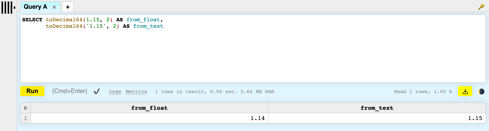
На стенде результат — 1.14 и 1.15. В первом случае десятичное значение уже приблизительно представлено во Float; при масштабировании и отбрасывании дробной части теряется копейка. Преобразование в Decimal не восстанавливает потерянную точность. Строка позволяет разобрать исходные десятичные цифры без этого промежуточного приближения.
Проверка границы: SELECT toDecimal32('10000000.00', 2) на стенде завершается ошибкой Code: 69, ARGUMENT_OUT_OF_BOUND. Восемь цифр до запятой не помещаются в выбранную точность и масштаб. Это результат показанного преобразования строки, не обещание одинаковой проверки для всех Decimal-операций и настроек.
сумма — 0,30, тип — Decimal(9, 2), лишняя тысячная отброшена. Для нашей суммы выбран Decimal(9, 2). Если потребуется большая сумма, увеличиваем точность, сохраняя масштаб копеек; другой вариант — целые копейки с явно указанной единицей измерения.
Числовые поля выбраны. Название товара потребует другой проверки — длины и сохранности текста.
§6Название: String, байты и символы
Зачем этот шагНазвание товара нужно сохранить как текст, а проверку его длины нельзя свести к числу байтов.
При отправке письма число букв и объём вложения в байтах — разные характеристики. Для названия товара тоже нужно различать текст и объём его кодировки. Байты позволяют хранить и передавать данные, но их количество не определяет число видимых знаков.
String хранит последовательность байтов переменной длины, в том числе произвольные двоичные данные. У String нет параметра с максимальным числом символов. Практические пределы задают ресурсы и ограничения обработки. Если название должно быть не длиннее 100 символов, это отдельное правило проверки.
Для текста будем использовать UTF-8 — кодировку, в которой один код Unicode записывается одним или несколькими байтами. Unicode — стандарт кодов для символов письменности и других знаков. Сам String не гарантирует корректный UTF-8. Функция length считает байты, lengthUTF8 при корректном UTF-8 — кодовые точки Unicode. Видимый знак может состоять из нескольких кодовых точек.
SELECT length('Ноутбук') AS bytes,
lengthUTF8('Ноутбук') AS code_points,
length('Laptop') AS ascii_bytes,
lengthUTF8('е́') AS combined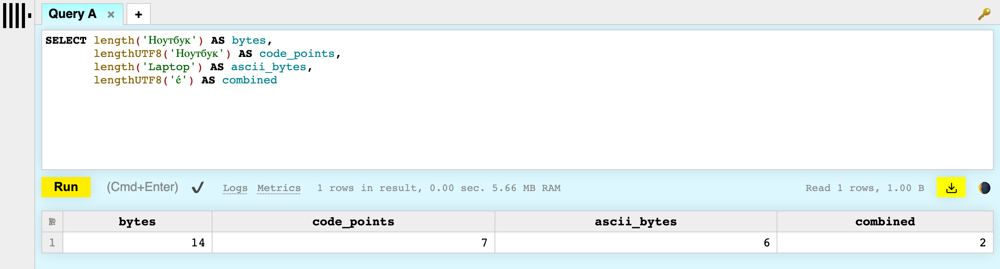
У слова «Ноутбук» семь букв и 14 байтов в UTF-8; у «Laptop» шесть букв и шесть байтов. Здесь каждая русская буква занимает два байта, каждая латинская ASCII-буква — один. Это свойства конкретных символов, не правило «любой русский текст вдвое тяжелее любого латинского». Число байтов текста также не равно полному размеру столбца на диске: там есть служебные данные и сжатие.
ответ — 14, 7, 6, 2. Для произвольного названия выбираем String; отдельно определяем кодировку и то, что считается длиной.
Для названия достаточно строки с оговорённой кодировкой. У даты доставки и времени заказа нужно сохранить календарный смысл и точность.
§7День доставки и момент заказа
Зачем этот шагОбещание «доставим 12 октября» и запись «заказ оформлен в 14:30:00» имеют разную точность и разный смысл.
Запись в календаре «доставка 12 октября» определяет день. Показание часов «14:30:00» само по себе не определяет момент: нужны дата и пояс. В календаре для этого служат подписи, а в данных — тип и правила разбора времени.
Date хранит календарный день как число дней от 1970-01-01, без времени суток и часового пояса. Диапазон — 1970-01-01…2149-06-06, представление занимает 2 байта. Для назначенного дня доставки этого достаточно. Если нужны более ранние даты, рассматривают Date32 с более широким диапазоном.
DateTime хранит момент с шагом в одну секунду как число секунд от 1970-01-01 00:00:00 UTC; занимает 4 байта. В UTC диапазон заканчивается 2106-02-07 06:28:15. DateTime64(3) хранит отсчёты по 0,001 секунды в 8 байтах; число 3 задаёт количество десятичных знаков долей секунды. Он нужен, если источник передаёт миллисекунды и они нужны в задачах.
Функции toDate, toDateTime и toDateTime64 преобразуют вход в соответствующий тип. В последних двух явно зададим 'UTC', чтобы результат не зависел от часового пояса сервера.
SELECT toDate('2026-10-10') AS delivery_date,
toDateTime('2026-10-10 14:30:00', 'UTC') AS ordered_at,
toDateTime64('2026-10-10 14:30:00.123', 3, 'UTC') AS precise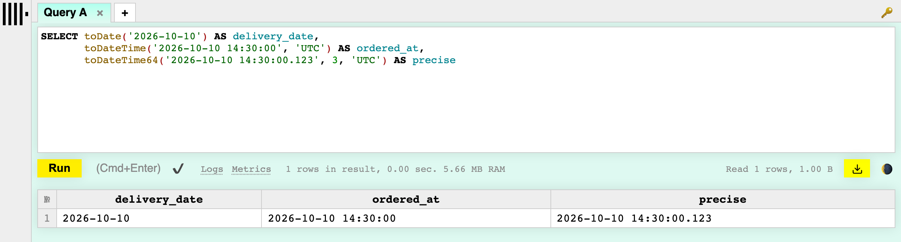
Если вместо момента заказа сохранить только Date, уже нельзя восстановить, какой заказ был оформлен раньше внутри дня. И наоборот, полночь в DateTime не добавляет полезного смысла обещанному дню доставки.
Часовой пояс задаёт правила перевода между моментом и местными часами. В типе DateTime('UTC') пояс — общее свойство типа столбца, не отдельное поле каждой строки. При разборе текста он определяет, какой момент обозначают часы, а при выводе — как показать момент. Проверим, меняет ли смена пояса сам момент:
2026-10-10
14:30:00Текст разбирается с поясом UTC.2026-10-10
17:30:00Для этой даты пояс UTC+3.toTimeZone(момент, пояс) меняет пояс представления, toUnixTimestamp(момент) возвращает счётчик секунд. Второй функцией сравним моменты независимо от отображения. В следующем запросе utc — имя первого выражения, используемое дальше в том же SELECT.
SELECT toDateTime('2026-10-10 14:30:00', 'UTC') AS utc,
toTimeZone(utc, 'Europe/Moscow') AS moscow,
toUnixTimestamp(utc) = toUnixTimestamp(moscow) AS same_instant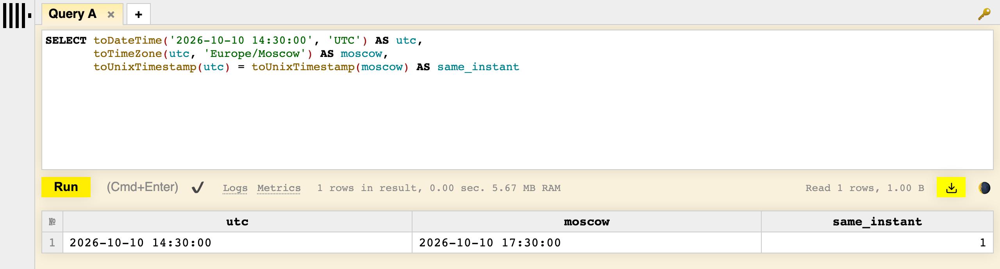
Если исходный текст уже дан по московским часам, разбирать его как UTC нельзя: это будет другой момент. По той же причине день, полученный из момента, зависит от пояса: возле полуночи местные даты могут различаться. Подробные вычисления с датами и поясами — глава 2.4.
сохранены нужные доли секунды; смена пояса дала 17:30:00 и 1. Для доставки выбран Date, для заказа с секундной точностью — DateTime('UTC'); миллисекунды без требования не добавляем.
Осталось поле с цифрами, для которого точность времени и арифметика не нужны: код товара.
§8Идентификатор: почему цифры не всегда число
Зачем этот шагКод товара нужен для поиска и сопоставления записей. Сохранность его записи проверим преобразованием туда и обратно.
Номер ячейки в гардеробе нужен для сопоставления жетона и вещи. Сложение двух номеров не помогает получить вещи. Сравнение объясняет назначение кода; формат и диапазон кодов определяет сама система.
Идентификатор обозначает объект. Числовой идентификатор без значимых нулей можно хранить в UInt32 или более широком целом. Но код поставщика 00127 должен сохранить все знаки; завтра в нём может появиться буква. Выбираем String, допускающий такую запись.
Посмотрим, какая информация исчезает при переводе кода в число. toUInt32 разбирает цифры как целое, toString возвращает текстовое представление уже полученного значения.
SELECT '00127' AS product_code,
toUInt32('00127') AS as_number,
toString(toUInt32('00127')) AS back_to_text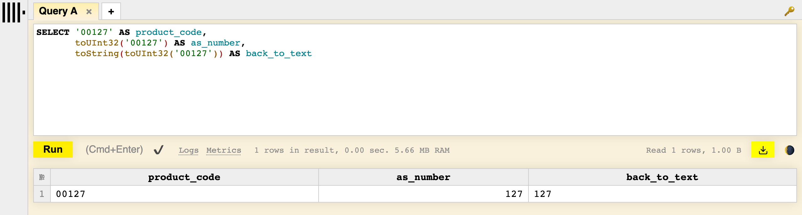
Для кода 00000 и 0 могут обозначать разные объекты, но числовое представление их не различит. Кроме того, строковый порядок отличается от числового: текстовые коды нельзя автоматически считать числовой последовательностью.
Если система выдаёт идентификаторы в формате UUID, подойдёт тип UUID: 128-битное значение, обычно записываемое шестнадцатеричными группами с дефисами. Но превращать код поставщика в UUID не требуется. Тип значения сам по себе не гарантирует уникальность записей в таблице.
первый столбец сохранил 00127, два остальных — нет. Критерий выбора: что определяет тождество объекта — числовое значение или точная запись кода.
Для выбранных полей типов достаточно. Проверим, есть ли задача для специальных ограниченных наборов значений.
§9Нужны ли специальные типы
Для шести выбранных полей они не нужны. Если добавить поле «оплачен ли заказ», у него два логических значения: true и false, для которых предназначен Bool. А фиксированный перечень состояний можно задать через Enum — соответствие разрешённых строк и целых кодов.
У произвольного названия товара нет закрытого перечня, поэтому сохраняем String. При добавлении состояния заказа выбор зависит от допустимости новых состояний: Enum потребует заранее перечислить каждое из них.
| Дополнительная задача | Допустимые значения | Тип |
|---|---|---|
| Факт оплаты | Истина или ложь | Bool |
| Закрытый набор состояний | Только заранее перечисленные строки | Enum |
| Произвольное название | Новые названия допускаются без изменения типа | String |
Добавлять такие поля сейчас не требуется. Зафиксируем схему шести исходных полей и границы её применимости.
§10Собираем схему позиции заказа
Зачем этот шагЗафиксируем имена типов вместе с условиями, при которых выбор остаётся верным.
| Поле | Тип | Обоснование | Когда пересмотреть |
|---|---|---|---|
qty | UInt16 | Целые 0…50 000 штук, без минуса | Появится минус или максимум свыше 65 535 |
amount | Decimal(9, 2) | Сумма позиции до 5 000 000 ₽; точные копейки | Суммы превысят 9 999 999,99 ₽ или нужна доля копейки |
product_name | String | Произвольное название в UTF-8 | Отдельно определить предел длины; тип его не задаёт |
delivery_date | Date | Только день доставки в рабочем диапазоне | Потребуется время суток или дата вне диапазона |
ordered_at | DateTime('UTC') | Момент заказа, точность источника — секунда | Нужны доли секунды или более широкий диапазон |
product_code | String | Код с ведущими нулями; возможны буквы | Изменится правило формирования и сопоставления кодов |
Это проект типов, ещё не команда создания таблицы. Получим одну строку с выбранными представлениями, чтобы проверить значения до главы 1.4:
SELECT toUInt16(3) AS qty,
toDecimal32('1499.70', 2) AS amount,
'Ноутбук' AS product_name,
toDate('2026-10-12') AS delivery_date,
toDateTime('2026-10-10 14:30:00', 'UTC') AS ordered_at,
'00127' AS product_code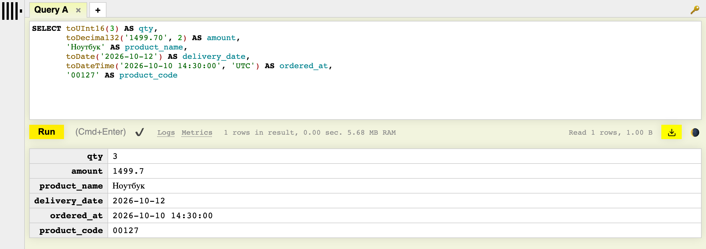
у суммы сохранены копейки, у кода — запись 00127, у даты нет выдуманного времени. Вы можете обосновать каждый тип и назвать условие его пересмотра.
§11Частые ошибки
Количество изменилось после преобразования
Сравните исходное значение с диапазоном целевого типа. Для проверки подозрительного значения примените accurateCast: выход за диапазон даст ошибку. Если фактические требования выросли, пересмотрите схему; если пришли ошибочные данные — исправьте источник.
Decimal дал на копейку меньше ожидаемого
Проверьте, не был ли вход уже Float, как в опыте с 1,15. Передавайте исходную десятичную запись без промежуточного двоичного приближения. Отдельно проверьте лишние знаки: уменьшение масштаба отбрасывает их без денежного округления.
Название «короче лимита», но проверка его отклоняет
Уточните, в чём задан лимит: байтах, кодовых точках или видимых знаках. length и lengthUTF8 отвечают на разные вопросы. Для составных символов даже кодовых точек может быть больше, чем видимых знаков.
Время заказа сдвинулось на несколько часов
Сначала выясните пояс исходного текста. Его разбор в неверном поясе и отображение верного момента в другом поясе — разные причины. Проверка через счётчик секунд помогает отделить изменение момента от изменения отображения.
Коды после загрузки перестали различаться
Если 00127 и 127 сначала стали числом 127, последующий перевод в String не восстановит различие. Для восстановления нужны исходные коды.
§12Самопроверка и самостоятельная задача
1. Теперь в позиции может быть до 70 000 штук. Достаточно ли заменить UInt16 на Int16?
Нет. У Int16 положительная граница даже меньше — 32 767. При отсутствии минуса подойдёт UInt32: его диапазон покрывает 70 000. Если нужно учитывать отрицательное изменение до −70 000, выбирают Int32. Знак и ширина решают разные вопросы.
2. Входная сумма — «7.999», а тип — Decimal(9, 2). Получится ли 8 рублей?
toDecimal32('7.999', 2) возвращает 7.99: лишний разряд отбрасывается. Если по правилам магазина требуется 8,00, нужно отдельно определить и применить округление. Сам выбор Decimal этого не делает.
3. События приходят с миллисекундами. Можно ли сначала записать их в DateTime, а потом перевести в DateTime64(3)?
Такой перевод не восстановит исходные миллисекунды, если при сохранении они были потеряны. Если доли секунды нужны для порядка событий, выбирают DateTime64(3) до загрузки и проверяют, что источник действительно их передаёт.
4. Поставщик гарантирует, что код состоит только из цифр. Хватит ли этого для выбора UInt32?
Нет. Нужно также знать, значимы ли ведущие нули и каков диапазон кодов. Имеет значение и правило сопоставления объектов по коду. toUInt32('00042') даёт 42. При значимых нулях нужен String независимо от отсутствия букв.
Самостоятельно: изменились требования магазина
Подготовьте таблицу «поле → тип → обоснование → граничная проверка» для новой версии набора данных:
- Вместо количества хранится изменение остатка от −50 000 до +50 000 штук.
- Сумма позиции может достигать 20 000 000 рублей, копейки должны сохраняться.
- В коде товара разрешены буквы; названия остаются произвольными.
- Момент заказа приходит в UTC с миллисекундами; доставка по-прежнему назначается на день.
Для каждого изменённого числового поля выполните запрос преобразования граничного значения и запрос toTypeName. Для кода проверьте сохранение '00A42', для момента — '2026-10-10 14:30:00.123'. Не создавайте и не меняйте таблицы.
Критерии проверки решения
Ожидаются Int32 для изменения остатка, Decimal(18, 2) для суммы (функция toDecimal64), String для кода и названия, DateTime64(3, 'UTC') для момента, Date для доставки. Для более широкого типа укажите требование, которое делает его необходимым. В результате преобразований должны сохраниться знак, копейки, буквы и нули кода, миллисекунды. У каждой проверки укажите ожидаемый результат до запуска, затем сравните с фактическим.
§13Краткая шпаргалка
Смысл и единица → допустимые значения → точность → нужные операции → представление.
toTypeName(x) — тип результата.accurateCast(x, 'UInt16') — проверка представимости целого.
Количество — UInt16; сумма — Decimal(9, 2); название и код — String; день — Date; момент — DateTime('UTC').
Изменились знак, максимум, требуемая точность, формат кода или смысл времени.
§14Что дальше
Типы для шести полей выбраны. Остаётся другой вопрос: что записывать, если значение неизвестно? Это тема главы 1.3. Создание таблицы по такой схеме — следующий отдельный шаг, глава 1.4.
Воспроизводимость и документация
Проверено на ClickHouse 26.8.36.3 с поясом UTC. Запросы численных опытов включают как успешные результаты, так и ожидаемые ошибки. Они не меняют данные. Отдельного сравнения скорости или размера сжатых таблиц здесь нет.